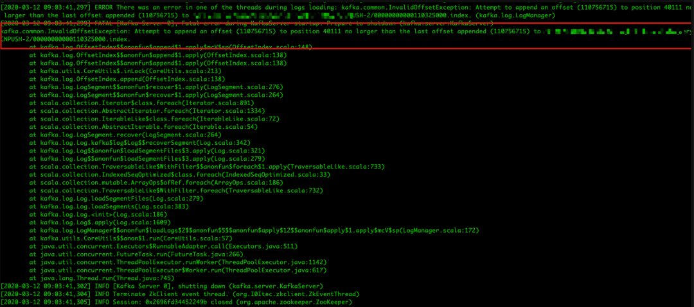
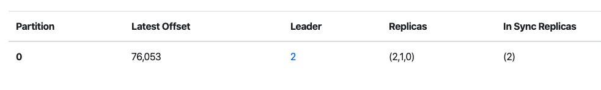

Kafka 节点重启失败导致数据丢失的分析排查与解决之道
背景
在 2 月10 号下午大概 1 点半左右，收到用户方反馈，发现日志 kafka 集群 A 主题 的 34 分区选举不了 leader，导致某些消息发送到该分区时，会报如下 no leader 的错误信息：
1 | In the middle of a leadership election, there is currently no leader for this partition and hence it is unavailable for writes. |
由于 A 主题 34 分区的 leader 副本在 broker0，另外一个副本由于速度跟不上 leader，已被踢出 ISR，0.11 版本的 kafka 的 unclean.leader.election.enable 参数默认为 false，表示分区不可在 ISR 以外的副本选举 leader，导致了 A 主题发送消息持续报 34 分区 leader 不存在的错误，且该分区还未消费的消息不能继续消费了。
接下来运维在 kafka-manager 查不到 broker0 节点了处于假死状态，但是进程依然还在，重启了好久没见反应，然后通过 kill -9 命令杀死节点进程后，接着重启失败了，导致了如下问题。
Kafka 日志分析
查看了 KafkaServer.log 日志，发现 Kafka 重启过程中，产生了大量如下日志：
发现大量主题索引文件损坏并且重建索引文件的警告信息，定位到源码处：
kafka.log.OffsetIndex#sanityCheck
按我自己的理解描述下：
Kafka 在启动的时候，会检查 kafka 是否为 cleanshutdown，判断依据为 ${log.dirs} 目录中是否存在 .kafka_cleanshutDown 的文件，如果非正常退出就没有这个文件，接着就需要 recover log 处理，在处理中会调用 sanityCheck() 方法用于检验每个 log sement 的 index 文件，确保索引文件的完整性：
entries：由于 kafka 的索引文件是一个稀疏索引，并不会将每条消息的位置都保存到 .index 文件中，因此引入了 entry 模式，
即每一批消息只记录一个位置，因此索引文件的 entries = mmap.position / entrySize；
lastOffset：最后一块 entry 的位移，即 lastOffset = lastEntry.offset；
baseOffset：指的是索引文件的基偏移量，即索引文件名称的那个数字。
索引文件与日志文件对应关系图如下：
判断索引文件是否损坏的依据是：
1 | _entries == 0 || _lastOffset > baseOffset = false // 损坏 |
这个判断逻辑我的理解是：
entries 索引块等于零时，意味着索引没有内容，此时可以认为索引文件是没有损坏的；当 entries 索引块不等于 0，就需要判断索引文件最后偏移量是否大于索引文件的基偏移量，如果不大于，则说明索引文件被损坏了，需要用重新构建。
那为什么会出现这种情况呢？
我在相关 issue 中似乎找到了一些答案：
https://issues.apache.org/jira/browse/KAFKA-1112
https://issues.apache.org/jira/browse/KAFKA-1554
总的来说，非正常退出在旧版本似乎会可能发生这个问题？
有意思的来了，导致开机不了并不是这个问题导致的，因为这个问题已经在后续版本修复了，从日志可看出，它会将损坏的日志文件删除并重建， 我们接下来继续看导致重启不了的错误信息：

问题就出在这里，在删除并重建索引过程中，就可能出现如上问题，在 issues.apache.org 网站上有很多关于这个 bug 的描述，我这里贴两个出来：
https://issues.apache.org/jira/browse/KAFKA-4972
https://issues.apache.org/jira/browse/KAFKA-3955
这些 bug 很隐晦，而且非常难复现，既然后续版本不存在该问题，当务之急还是升级 Kafka 版本，后续等我熟悉 scala 后，再继续研究下源码，细节一定是会在源码中呈现。
解决思路分析
针对背景两个问题，矛盾点都是因为 broker0 重启失败导致的，那么我们要么把 broker0 启动成功，才能恢复 A 主题 34 分区。
由于日志和索引文件的原因一直启动不起来，我们只需要将损坏的日志和索引文件删除并重启即可。但如果出现 34 分区的日志索引文件也损坏的情况下，就会丢失该分区下未消费的数据，原因如下：
此时 34 分区的 leader 还处在 broker0 中，由于 broker0 挂掉了且 34 分区 isr 只有 leader，导致 34 分区不可用，在这种情况下，假设你将 broker0 中 leader 的数据清空，重启后 Kafka 依然会将 broker0 上的副本作为 leader，那么就需要以 leader 的偏移量为准，而这时 leader 的数据清空了，只能将 follower 的数据强行截断为 0，且不大于 leader 的偏移量。
这似乎不太合理，这时候是不是可以提供一个操作的可能：
在分区不可用时，用户可以手动设置分区内任意一个副本作为 leader？
下面我会对这个问题进行分析。
后续集群的优化
1、制定一个升级方案，将集群升级到 2.x 版本；
2、每个节点的服务器将 systemd 的默认超时值为 600 秒，因为我发现运维在故障当天关闭 33 节点时长时间没反应，才会使用 kill -9 命令强制关闭。
但据我了解关闭一个 Kafka 服务器时，Kafka 需要做很多相关工作，这个过程可能会存在相当一段时间，而 systemd 的默认超时值为 90 秒即可让进程停止，那相当于非正常退出了。
3、将 broker 参数 unclean.leader.election.enable 设置为 true（确保分区可从非 ISR 中选举 leader）；
4、将 broker 参数 default.replication.factor 设置为 3（提高高可用，但会增大集群的存储压力，可后续讨论）；
5、将 broker 参数 min.insync.replicas 设置为 2（这么做可确保 ISR 同时有两个，
但是这么做会造成性能损失，是否有必要？因为我们已经将 unclean.leader.election.enable 设置为 true 了）；
6、发送端发送 acks=1（确保发送时有一个副本是同步成功的，但这个是否有必要，因为可能会造成性能损失）。
从源码中定位到问题的根源
首先把导致 Kafka 进程退出的异常栈贴出来：
注：以下源码基于 kafka 0.11.x 版本。
我们直接从 index 文件损坏警告日志的位置开始：
kafka.log.Log#loadSegmentFiles
从前一篇文章中已经说到，Kafka 在启动的时候，会检查kafka是否为 cleanshutdown，判断依据为 ${log.dirs} 目录中是否存在 .kafka_cleanshutDown 的文件，如果非正常退出就没有这个文件，接着就需要 recover log 处理，在处理中会调用 。
在 recover 前，会调用 sanityCheck() 方法用于检验每个 log sement 的 index 文件，确保索引文件的完整性 ，如果发现索引文件损坏，删除并调用 recoverSegment() 方法进行索引文件的重构，最终会调用 recover() 方法：
kafka.log.LogSegment#recover
源码中相关变量说明：
log：当前日志 Segment 文件的对象；
batchs：一个 log segment 的消息压缩批次；
batch：消息压缩批次；
indexIntervalBytes：该参数决定了索引文件稀疏间隔打底有多大，由 broker 端参数 log.index.interval.bytes 决定，默认值为 4 KB，即表示当前分区 log 文件写入了 4 KB 数据后才会在索引文件中增加一个索引项（entry）；
validBytes：当前消息批次在 log 文件中的物理地址。
知道相关参数的含义之后，那么这段代码的也就容易解读了：循环读取 log 文件中的消息批次，并读取消息批次中的 baseOffset 以及在 log 文件中物理地址，将其追加到索引文件中，追加的间隔为 indexIntervalBytes 大小。
我们再来解读下消息批次中的 baseOffset：
我们知道一批消息中，有最开头的消息和末尾消息，所以一个消息批次中，分别有 baseOffset 和 lastOffset，源码注释如下：
其中最关键的描述是：它可以是也可以不是第一条记录的偏移量。kafka.log.OffsetIndex#append
以上是追加索引块核心方法，在这里可以看到 Kafka 异常栈的详细信息，Kafka 进程也就是在这里被异常中断退出的。（这里吐槽一下，为什么一个分区有损坏，要整个 broker 挂掉？宁错过，不放过？就不能标记该分区不能用，然后让 broker 正常启动以提供服务给其他分区吗？建议 Kafka 在日志恢复期间加强异常处理，不知道后续版本有没有优化，后面等我拿 2.x 版本源码分析一波）
退出的条件是：
1 | _entries == 0 || offset > _lastOffset = false |
也就是说，假设索引文件中的索引条目为 0，说明索引文件内容为空，那么直接可以追加索引，而如果索引文件中有索引条目了，需要消息批次中的 baseOffset 大于索引文件最后一个条目中的位移，因为索引文件是递增的，因此不允许比最后一个条目的索引还小的消息位移。
现在也就很好理解了，产生这个异常报错的根本原因，是因为后面的消息批次中，有位移比最后索引位移还要小（或者等于）。
前面也说过了，消息批次中的 baseOffset 不一定是第一条记录的偏移量，那么问题是不是出在这里？我的理解是这里有可能会造成两个消息批次获取到的 baseOffset 有相交的值？
对此我并没有继续研究下去了，但我确定的是，在 kafka 2.x版本中，append() 方法中的 offset 已经改成 消息批次中的 lastOffset 了：
这里我也需要吐槽一下，如果出现这个 bug，意味着这个问题除非是将这些故障的日志文件和索引文件删除，否则该节点永远启动不了，这也太暴力了吧？
我花了非常多时间去专门看了很多相关 issue，目前还没看到有解决这个问题的方案？
或者我需要继续寻找？我把相关 issue 贴出来：
https://issues.apache.org/jira/browse/KAFKA-1211
https://issues.apache.org/jira/browse/KAFKA-3919
https://issues.apache.org/jira/browse/KAFKA-3955
严重建议各位尽快把 Kafka 版本升级到 2.x 版本，旧版本太多问题了，后面我着重研究 2.x 版本的源码。
下面我从日志文件结构中继续分析。
从日志文件结构中看到问题的本质
我们用 Kafka 提供的 DumpLogSegments 工具打开 log 和 index 文件：
1 | $ ~/kafka_2.1x-0.11.x/bin/kafka-run-class.sh kafka.tools.DumpLogSegments --files {log_path}/secxxx-2/00000000000110325000.log > secxxx.log$ ~/kafka_2.1x-0.11.x/bin/kafka-run-class.sh kafka.tools.DumpLogSegments --files {log_path}/secxxx-2/00000000000110325000.index > secxxx-index.log |
用 less -Nm 命令查看，log 和 index 对比：
如上图所示，index最后记录的 offset = 110756715，positioin=182484660，与异常栈显示的一样，说明在进行追加下一个索引块的时候，发现下一个索引块的 offset 索引不大于最后一个索引块的 offset，因此不允许追加，报异常并退出进程，那么问题就出现在下一个消息批次的 baseOffset，根据 log.index.interval.bytes 默认值大小为 4 KB（4096），而追加的条件前面也说了，需要大于 log.index.interval.bytes，因此我们 DumpLogSegments 工具查询：
从 dump 信息中可知，在 positioin=182484660 往后的几个消息批次中，它们的大小加起来大于 4096 的消息批次的 offset=110756804，postion=182488996，它的 baseOffset 很可能就是 110756715，与索引文件最后一个索引块的 Offset 相同，因此出现错误。
接着我们继续用 DumpLogSegments 工具查看消息批次内容：
我们先查看 offset = 110756715，positioin=182484660 的消息块详情：
接着寻找 offset = 110756715，的消息批次块：
终于找到你了，跟我预测的一样！postion=182488996，在将该消息批次追加到索引文件中，发生 offset 混乱了。
如果还是没找到官方的处理方案，就只能删除这些错误日志文件和索引文件，然后重启节点？
非常遗憾，我在查看了相关的 issue 之后，貌似还没看到官方的解决办法，所幸的是该集群是日志集群，数据丢失也没有太大问题。
我也尝试发送邮件给 Kafka 维护者，期待大佬的回应：
不过呢，0.11.x 版本属于很旧的版本了，因此，升级 Kafka 版本才是长久之计啊！我已经迫不及待地想撸 kafka 源码了！
经过以上问题分析与排查之后，我专门对分区不可用进行故障重现，并给出我的一些骚操作来尽量减少数据的丢失。
故障重现
下面我用一个例子重现现分区不可用且 leader 副本被损坏的例子：
使用 unclean.leader.election.enable = false 参数启动 broker0；
使用 unclean.leader.election.enable = false 参数启动 broker1；
创建 topic-1，partition=1，replica-factor=2；
将消息写入 topic-1；
此时，两个 broker 上的副本都处于 ISR 中，broker0 的副本为 leader 副本；
停止 broker1，此时 topic-1 的 leader 依然是 broker0 的副本，而 broker1 的副本从 ISR 中剔除；
停止 broker0，并且删除 broker0 上的日志数据；
重启 broker1，topic-1 尝试连接 leader 副本，但此时 broker0 已经停止运行，此时分区处于不可用状态，无法写入消息；
恢复 broker0，broker0 上的副本恢复 leader 职位，此时 broker1 尝试加入 ISR，但此时由于 leader 的数据被清除，即偏移量为 0，此时 broker1 的副本需要截断日志，保持偏移量不大于 leader 副本，此时分区的数据全部丢失。
向Kafka官方提的建议
在遇到分区不可用时，是否可以提供一个选项，让用户可以手动设置分区内任意一个副本作为 leader？
因为集群一旦设置了 unclean.leader.election.enable = false，就无法选举 ISR 以外的副本作为 leader，在极端情况下仅剩 leader 副本还在 ISR 中，此时 leader 所在的 broker 宕机了。
那如果此时 broker 数据发生损坏这么办？在这种情况下，能不能让用户自己选择 leader 副本呢？尽管这么做也是会有数据丢失，但相比整个分区的数据都丢失而言，情况还是会好很多的。
如何尽量减少数据丢失
首先你得有一个不可用的分区（并且该分区 leader 副本数据已损失），如果是测试，可以以上故障重现 1-8 步骤实现一个不可用的分区（需要增加一个 broker）：
此时 leader 副本在 broker0，但已经挂了，且分区不可用，此时 broker2 的副本由于掉出 ISR ，不可选为 leader，且 leader 副本已损坏清除，如果此时重启 broker0，follower 副本会进行日志截断，将会丢失该分区所有数据。
经过一系列的测试与实验，我总结出了以下骚操作，可以强行把 broker2 的副本选为 leader，尽量减少数据丢失：
1、使用 kafka-reassign-partitions.sh 脚本对该主题进行分区重分配，当然你也可以使用 kafka-manager 控制台对该主题进行分区重分配，重分配之后如下：
此时 preferred leader 已经改成 broker2 所在的副本了，但此时的 leader 依然还是 broker0 的副本。需要注意的是，分区重分配之后的 preferred leader 一定要之前那个踢出 ISR 的副本，而不是分区重分配新生成的副本。因为新生成的副本偏移量为 0，如果自动重分配不满足，那么需要编写 json 文件，手动更改分配策略。
2、进入 zk，查看分区状态并修改它的内容：
修改 node 内容，强行将 leader 改成 2（与重分配之后的 preferred leader 一样），并且将 leader_epoch 加 1 处理，同时 ISR 列表改成 leader，改完如下：
此时，kafka-manager 控制台会显示成这样：

但此时依然不生效，记住这时需要重启 broker 0。
3、重启 broker0，发现分区的 lastOffset 已经变成了 broker2 的副本的 lastOffset：
成功挽回了 46502 条消息数据，尽管依然丢失了 76053 - 46502 = 29551 条消息数据，但相比全部丢失相对好吧！
以上方法的原理其实很简单，就是强行把 Kafka 认定的 leader 副本改成自己想要设置的副本，然后 lastOffset 就会以我们手动设置的副本 lastOffset 为基准了。